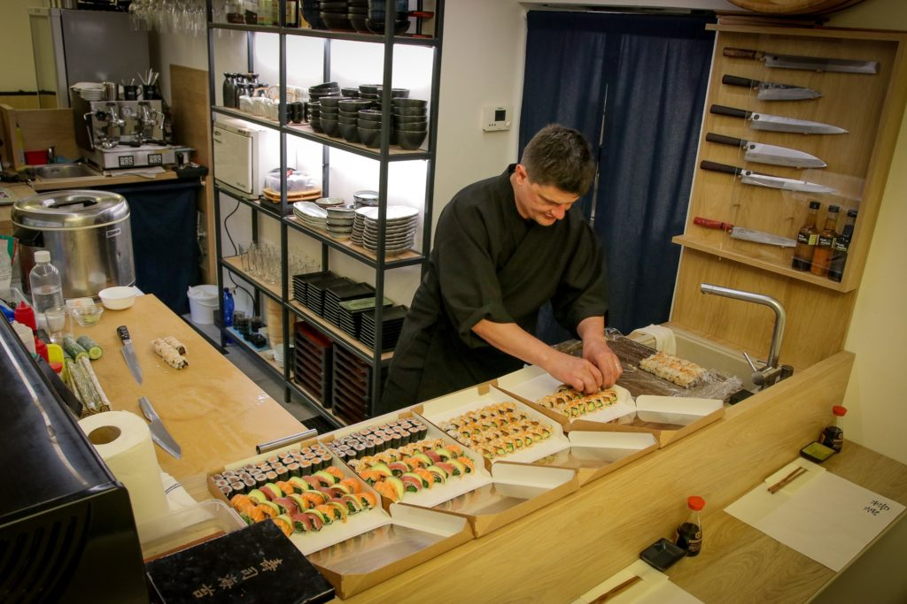
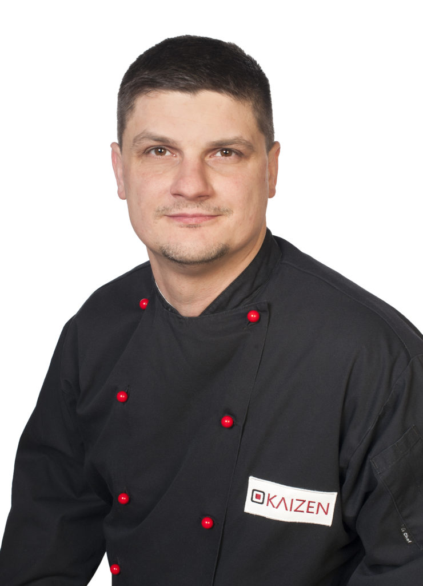

Ve dnech 22.–23. srpna 2025 reprezentoval šéfkuchař Jaroslav Karásek Českou republiku na World Sushi Cup v japonském Tokiu, kde obsadil celkově 4. místo. Během svého působení v Tokiu úspěšně složil teoretické i praktické zkoušky a získal následující certifikace:
KURO OBI certifikát: Na základě bodového ohodnocení mu byl udělen stupeň 1. DAN – označení, které drží pouze 77 sushi mistrů na světě.
SUSHI PROFICIENCY certifikát


Rané směřování
Vyrůstal jsem v Havířově a mé rané směřování utvářely dvě disciplíny: judo a výtvarné umění. Věnoval jsem se tradičnímu judu – založenému v roce 1882 jako systém tělesného, mentálního a morálního rozvoje – a současně jsem navštěvoval uměleckou školu. Japonská kulinářská kultura, především sushi, se stala přirozeným průsečíkem těchto dvou cest.
Profesní dráha
Praha (1999): Před 26 lety jsem zahájil svou kulinářskou průpravu v restauraci Massahana, kde jsem se učil tradičním postupům pod vedením japonských a korejských mistrů.
Velká Británie: Strávil jsem sedm let zdokonalováním techniky v japonských restauracích Moshimo a Atami se zaměřením na tradiční zpracování ryb a přípravu nigiri, sashimi a maki.
Brno (od roku 2010): Po návratu do České republiky jsem vedl kuchyni v Momo Sushi. V roce 2017 jsem založil společnost Kaizen s cílem předávat v Brně tradiční japonské a korejské kulinářské řemeslo.
Kaizen: Společnost pojmenovaná podle filosofie neustálého zdokonalování přináší autentickou japonskou a korejskou kuchyni stálým hostům i všem, kteří oceňují disciplinované kulinářské řemeslo.
Sushi sebou
Pro maximální čerstvost připravujeme vše na objednávku. Zavolejte nám na 734 763 637 a objednejte si své oblíbené sushi k osobnímu vyzvednutí v restauraci. Rozvoz nenabízíme.
Bento box menu podáváme pouze ve čtvrtek od 11:00 do 14:00. Pro zajištění dostupnosti si jej objednejte telefonicky ve středu a ve čtvrtek vyzvedněte u nás.
Menu
Nic jsme nenašli. Zkuste jiné slovo, například „losos“ nebo „tuňák“.
Rezervace
1Den a čas
2Vaše údaje
3Potvrzení
Rezervace je připravená
Toto je demonstrační verze. Nic se neodeslalo a nic se neuložilo.
Catering
Sushi a japonskou i korejskou kuchyni připravíme na firemní akce, oslavy a soukromé události. Nabídku přizpůsobíme počtu hostů i vašim představám.